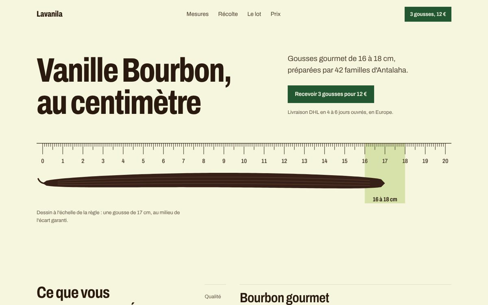
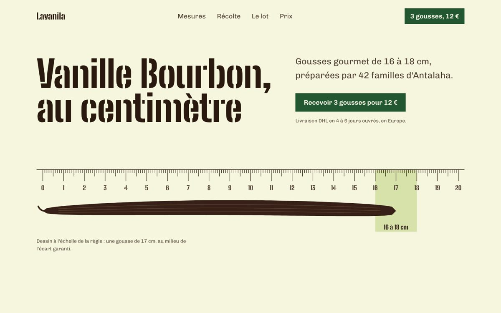
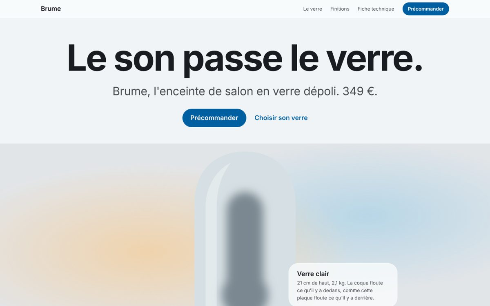
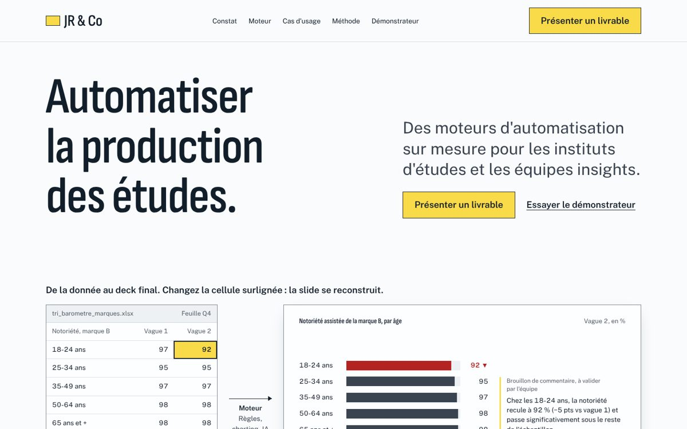

Ce que des agents en ont fait
Quatre captures de tests, faits par des agents qui suivaient le skill. Ce sont des essais, avec leurs défauts : c'est d'eux que viennent plusieurs règles.


Lavanila, la même landing deux foisBrief de test : une coopérative de vanille. Avant, puis après l'application des règles de typographie et d'espacement du skill : la police d'affichage change, les tailles et les écarts passent sur une échelle.


Il cadre avant de coder
- Créelanding pages, sites, écrans d'app, dashboards, docs et portfolios.
- Refondun écran qui « fait IA », sans changer ce que fait le produit.
- Relitun design et dit ce qui trahit une page générée, avec les corrections.
- Choisitpalette, typographie et animations à partir de sources réelles.
- Produitdes vidéos produit et du motion design en code.
Toutes les questions d'un coup
Un tour sur le projet, un sur le goût, un sur la matière : 12 questions au plus, puis plus d'aller-retour. Sans police de marque, il propose 3 paires tirées du sujet.
Il montre ensuite une fiche brief à valider une fois. Dites « carte blanche » et il décide tout lui-même, en annonçant ses hypothèses.
Je lis ce projet comme : …
Douze étapes, dans cet ordre
- Lire le projet
- cadrer
- inventorier le sujet
- écrire l'argument
- voir des références réelles
- tirer une direction hors de la moyenne
- formuler l'idée
- écrire tous les textes
- construire sans mouvement
- contrôler
- faire juger par un regard neuf
- ajouter le mouvement et livrer
Les huit premières se font avant la première ligne de code.
Les règles changent selon ce que le visiteur doit réussir
- Persuader
- Il décide et agit.
- Landing, marketing, tarifs
- Opérer
- Il termine une tâche.
- App, dashboard, admin
- Lire
- Il comprend.
- Docs, articles, guides
- Expérience
- Il est dans l'œuvre.
- Portfolio, galerie
Un filet discret est normal dans un dashboard et un tic sur une landing. La refonte n'est pas un mode : audit écrit, diagnostic, direction en 5 lignes que vous validez, puis 9 passes dans un ordre fixe.
Polices réflexes, refusées sans raison de marque : Inter Space Grotesk DM Sans Archivo Satoshi Fraunces
Les interdits ne sont pas un style
Pas d'eyebrow, pas de dégradé violet, pas de rangée de cartes identiques, pas de police réflexe. Chaque défaut se lève avec une raison écrite liée au projet. Une page qui respecte les interdits sans rien affirmer est rejetée.
Sept règles qui ne se lèvent jamais
Ni par goût, ni par le brief, ni par une ressource externe.
- A1
Accessibilité
WCAG 2.2 AA : contrastes, focus, clavier, cibles, mouvement réduit.
- A2
Honnêteté
Aucune preuve, aucun chiffre, aucune fonctionnalité inventés.
- A3
Traçabilité
Chaque police, composant, image et référence a une source réelle.
- A4
Confidentialité
Aucune donnée client envoyée à un service tiers sans accord écrit.
- A5
Performance
LCP ≤ 2,5 s, INP ≤ 200 ms, CLS ≤ 0,1.
- A6
Technique
Couleurs, polices, tailles et espacements uniquement en tokens ; pas de
transition: all, pas de défilement horizontal. - A7
Le brief
Il l'emporte sur les défauts, jamais sur A1 à A6.
Installer en une commande
npx skills add jrco-dev/julio-antislop-design --skill julio-antislop-design
Avec le CLI skills : Claude Code, Codex, Cursor et les autres agents détectés. Ajoutez -g pour l'installer pour tous vos projets. Redémarrez votre agent après l'installation.
À la main, pour Claude Code
git clone https://github.com/jrco-dev/julio-antislop-design cp -r julio-antislop-design/skills/julio-antislop-design ~/.claude/skills/
Ou dans .claude/skills/ d'un seul projet.
Sur Claude.ai
Téléchargez dist/julio-antislop-design.skill depuis le dépôt et ajoutez-le dans vos paramètres de skills.
Les contrôles, inclus ou recommandés
- scripts/check-tokens.mjs
- Tailles, espacements et polices hors tokens, polices réflexes. Node seul, inclus.
- scripts/roll.mjs
- Tire la direction : archétype, cartes de contrainte, couleur, polices, risques. Inclus.
- scripts/board.mjs, scripts/explore.mjs
- Planche des sites de référence ; comparaison de trois premiers écrans. Demandent Playwright.
- npx impeccable detect
- Détecteur de tics et de défauts, sans LLM (Impeccable).
Sans ces outils, l'agent le dit dans son rapport au lieu de prétendre avoir vérifié.
Limites connues
- Peu mesuré.
Un seul test à l'aveugle, sur une landing, contre Hallmark et Impeccable, le 3 novembre 2026. Il a révélé une police réflexe et des tailles hors échelle, corrigées depuis. Un second test est en préparation.
- Des sites modèles décrits en texte.
Les 110 sites ont été confirmés en ligne, mais certaines descriptions visuelles restent à confirmer en ouvrant le site, ce que le skill demande à l'agent de faire.
- Rédigé en français.
Les agents le suivent quelle que soit la langue de la demande. Une édition anglaise est dans le dépôt.
- Il ne remplace pas un designer.
Il évite les défauts et force les décisions ; la qualité finale dépend de la matière réelle que vous fournissez.
In English
An agent skill that makes interfaces look designed, not generated.
- The idea comes from the subject: an inventory of what belongs only to this client, an idea sentence, a competitor test.
- Nothing is invented: no made-up fonts, components, numbers, quotes or features.
- Out of the average: a local roll assigns a composition archetype, constraint cards and two risk levers; three heroes are compared before the full build.
- Rules depend on the mode: Persuade, Operate, Read, Experience, plus a redesign variant in 9 passes.
- An absolute floor: WCAG 2.2 AA, honesty, traceability, client confidentiality, Core Web Vitals, technical hygiene.
- Checked, not promised: token checker, detector, screenshots at 4 widths, fresh-eyes critique.
The skill is written in French and triggers on English requests too. An English edition, julio-antislop-design-en, is in the repository.
npx skills add jrco-dev/julio-antislop-design --skill julio-antislop-design